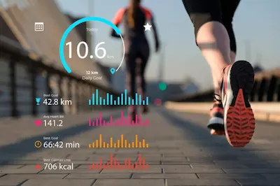

¿Realmente necesitas 10,000 pasos diarios? La ciencia lo aclara
El Origen del Mito de los 10,000 Pasos
La recomendación de caminar 10,000 pasos al día no tiene un fundamento científico sólido, sino que surgió en Japón en la década de 1960 como parte de una campaña de marketing para un podómetro llamado "Manpo-kei", que literalmente significa "medidor de 10,000 pasos". Esta cifra se popularizó por su redondez y facilidad de recordación, pero no fue establecida basándose en investigaciones sobre salud. Sin embargo, con el tiempo, muchas organizaciones y aplicaciones de fitness adoptaron este número como un estándar de actividad física diaria, perpetuando el mito.
Estudios recientes han demostrado que, aunque caminar es beneficioso para la salud, el número ideal de pasos varía según la edad, el estado físico y los objetivos individuales. Por ejemplo, una investigación publicada en The Lancet en 2022 encontró que para adultos menores de 60 años, caminar entre 7,000 y 9,000 pasos diarios ya ofrece la mayoría de los beneficios cardiovasculares y metabólicos asociados a los 10,000 pasos. Para adultos mayores, incluso menos pasos pueden ser suficientes para mejorar significativamente la salud.
Beneficios Científicos de Caminar
Caminar regularmente tiene múltiples beneficios para la salud, independientemente de si se alcanzan o no los 10,000 pasos. Esta actividad mejora la circulación sanguínea, reduce el riesgo de enfermedades cardiovasculares, fortalece los músculos y huesos, y ayuda a mantener un peso saludable. Además, caminar tiene un impacto positivo en la salud mental, reduciendo los síntomas de ansiedad y depresión gracias a la liberación de endorfinas.
Un estudio de The Journal of the American Medical Association (JAMA) mostró que personas que caminaban al menos 7,000 pasos al día tenían un 50-70% menos riesgo de mortalidad prematura en comparación con aquellas que caminaban menos de 3,000 pasos. Lo interesante es que los beneficios máximos se observaron alrededor de los 7,500 pasos, sin diferencias significativas al aumentar a 10,000. Esto sugiere que la obsesión por alcanzar una cifra arbitraria puede ser menos importante que mantener una rutina constante de movimiento a lo largo del día.
Personalización Según Edad y Objetivos
El número ideal de pasos debe adaptarse a las necesidades individuales. Para una persona joven y activa, 10,000 pasos pueden ser un objetivo razonable, pero para alguien mayor o con movilidad reducida, 5,000 pasos pueden representar un gran logro. Lo crucial es evitar el sedentarismo: incluso pequeños aumentos en la actividad diaria, como levantarse cada hora para caminar unos minutos, tienen beneficios medibles para la salud.
Para quienes buscan perder peso, combinar caminatas con otros tipos de ejercicio (como entrenamiento de fuerza) es más efectivo que solo enfocarse en los pasos. La clave está en encontrar un equilibrio que sea sostenible a largo plazo, sin caer en la frustración por no alcanzar una meta arbitraria. La ciencia respalda que cualquier cantidad de pasos por encima del nivel sedentario (menos de 3,000 pasos al día) ya contribuye positivamente a la salud.
Cómo Incorporar Más Pasos a Tu Rutina
Alcanzar un número saludable de pasos no requiere necesariamente largas caminatas. Pequeños cambios en la rutina pueden sumar significativamente: usar las escaleras en lugar del ascensor, estacionar el auto más lejos del destino, o dar paseos cortos después de las comidas. La tecnología, como los podómetros o las apps de fitness, puede ser útil para monitorear el progreso, pero no debe convertirse en una obsesión.
En conclusión, aunque los 10,000 pasos son un objetivo simbólico, la ciencia muestra que cantidades menores ya ofrecen grandes beneficios. Lo más importante es mantenerse activo de manera regular y disfrutar del proceso, sin presionarse por alcanzar una cifra específica. La salud no se mide en pasos, sino en hábitos consistentes y un estilo de vida equilibrado.